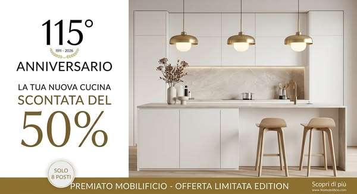
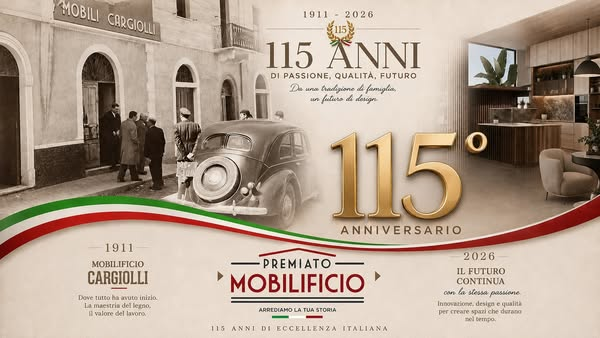

Gli spazi sono difficili da organizzare?
1911 — 2026 115° anniversario
Una storia
di casa.
Una cucina
tutta tua.
Per i nostri 115 anni, celebriamo insieme a te con una promozione speciale sulla tua nuova cucina.
La tua nuova cucina-50%Top in gres e 4 elettrodomestici inclusi
Solo 8 progettazioni disponibili per novembre

IL PUNTO DI PARTENZA
La cucina giusta
parte dalla tua vita.
Ogni giorno, lo spazio deve funzionare per chi lo vive. Da qui comincia un progetto fatto bene.
Vorresti materiali e finiture più vicini al tuo stile?
Vuoi capire come stare nel budget prima di scegliere?
Hai bisogno di vedere come starà la cucina nel tuo ambiente?
Una cucina ben progettata nasce da come la vivi, ogni giorno.

DAL 1911, INSIEME ALLE CASE
115 anni
non si raccontano.
Si tramandano.
Nel 1911 nasceva il Mobilificio Cargiolli: una piccola realtà artigiana fatta di legno, lavoro e passione.
Anno dopo anno sono cambiate le persone, le case, le esigenze. E noi abbiamo continuato a evolverci.
Oggi quella storia continua con un nuovo nome: Premiato Mobilificio. La stessa famiglia, gli stessi valori, una nuova visione della casa.
Scopri la nostra storiaUN ANNIVERSARIO DA FESTEGGIARE
115 anni di passione.
Il regalo è per te.
Per celebrare la nostra storia, abbiamo pensato a un'occasione speciale per la tua nuova cucina.
LA TUA NUOVA CUCINA50%DI SCONTO
- Top in gresEleganza e carattere per il tuo spazio
- 4 elettrodomestici inclusiSelezione di brand: Bosch, AEG, Samsung, Siemens e Whirlpool
Composizione, modelli e condizioni della promozione vengono verificati durante la progettazione.
SOLO 8 PROGETTAZIONI A NOVEMBRE
Raccontaci la cucina che immagini.
Lasciaci un recapito: il team ti ricontatterà per ascoltare le tue esigenze e spiegarti l'offerta.
Preferisci parlare con noi?0187 418289
Promozione anniversario comunicata per novembre 2026, fino a esaurimento delle progettazioni disponibili.
LA STESSA PASSIONE, UNA NUOVA VISIONE
Una storia che guarda avanti.
LE RADICI
Mobilificio Cargiolli
Legno, lavoro e passione. Una realtà artigiana che cresce insieme alle case e alle persone.
IL FUTURO CONTINUA
Premiato Mobilificio
La stessa famiglia e gli stessi valori, con una nuova visione della casa e del progetto d'interni.
Una storia di eccellenza italiana, scritta insieme a chi ci sceglie.
DAL PRIMO CONTATTO AL PROGETTO
La tua cucina,
un passo alla volta.
Ci racconti cosa ti serve. Il team ti accompagna nella progettazione e nella valutazione della proposta.
Raccontaci
Parliamo delle tue abitudini, dello spazio e di quello che desideri nella tua nuova cucina.
Un primo confronto, senza impegnoProgettiamo
Valutiamo insieme misure, composizione, finiture ed elettrodomestici più adatti al tuo ambiente.
Una soluzione pensata per teVisualizza
Quando previsto dal progetto, il rendering 3D ti aiuta a vedere la disposizione prima di scegliere.
Più chiarezza sulle tue sceltePRIMA DI SCEGLIERE
Tre dubbi, una risposta
chiara e concreta.
È normale voler capire bene ogni dettaglio prima di iniziare un progetto importante per la casa.
“Riuscirò a stare nel budget?”
È una delle prime cose da chiarire. Durante il confronto definiamo le tue priorità e verifichiamo insieme come si applica la promozione alla composizione scelta, prima di confermare il progetto.
“Quanto tempo mi porterà via?”
Si parte da un primo contatto e da un confronto sulle esigenze. Tempi e prossimi passaggi dipendono dal progetto: li concordiamo con te, senza aggiungere appuntamenti inutili.
“La soluzione funzionerà nei miei spazi?”
La progettazione parte dalle misure e dalla forma della stanza. Raccontaci vincoli e abitudini: il team valuterà le possibilità e ti mostrerà come può organizzarsi l'ambiente.
115 ANNI DI STORIA. UN'OCCASIONE PER LA TUA CASA.
La tua nuova cucina
comincia da qui.
Solo 8 progettazioni disponibili per novembre. Raccontaci cosa immagini.
Richiedi una consulenzaTUTTO CHIARO, PRIMA DI PARTIRE
Le domande che
è giusto farsi.
Qui trovi le risposte principali sulla promozione e sul primo confronto con il nostro team.
La promozione è dedicata alle nuove progettazioni di cucina. Composizione, condizioni e applicazione dello sconto vengono verificate insieme prima di confermare.
Il copy della promozione prevede il top in gres. Finiture, composizione e condizioni saranno definite durante la consulenza.
La proposta prevede quattro elettrodomestici selezionati tra i brand indicati: Bosch, AEG, Samsung, Siemens e Whirlpool. Modelli e disponibilità vanno confermati.
La campagna indica otto progettazioni per il mese di novembre 2026. La disponibilità va verificata al momento della richiesta.
Sì. Il sito presenta la consulenza come gratuita e senza impegno: puoi confrontarti con il team prima di decidere.
Puoi iniziare raccontandoci il tuo progetto. Le misure e i dettagli dello spazio verranno raccolti e verificati con il team.
Il mobilificio propone progetti personalizzati con rendering 3D. La modalità viene valutata in base alle esigenze e al progetto.
Il copy della campagna la indica per novembre 2026 e fino a esaurimento delle progettazioni disponibili. Verifica le condizioni quando ci contatti.
Hai un'altra domanda?Chiamaci allo 0187 418289